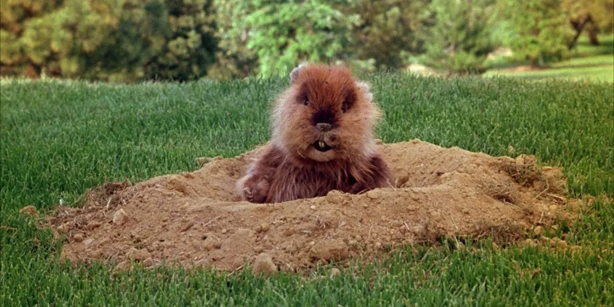
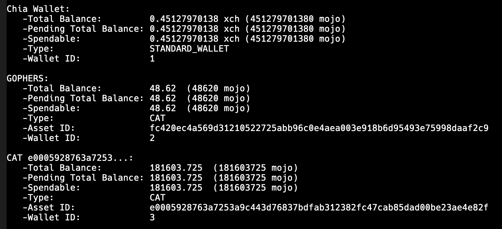

Gophers: Offer-mintable CATs

WARNING
Don't use this with real money, it's intended for testnet/simulator only. So use at your own risk.
ASSET ID: fc420ec4a569d31210522725abb96c0e4aea003e918b6d95493e75998daaf2c9
The idea
I wanted to make a CAT that you can mint yourself if you're spending XCH in an offer. For every 1 XCH you spend when taking an offer, you can mint 1000 Gopher CATs.
The offer file has to request some amount of xch, and the taker can then mint CATs in the amount of 1/1000 of the requested XCH amount. Minting is funded separately by the taker.

Figure 1: Output from a wallet that has minted gophers via an offer
Quick technical summary
The tail is what controls when and how many CATs can be minted. You can see the chialisp here. In this case we want a tail that only executes if there's an offer being spent, and it's using xch that we contributed.
To do this, when we run the tail we pass in the notarized payments for the offer. The tail makes puzzle assertions for each notarized payment to match the offer announcements. We use this to calculate the amount of xch being consumed in the offer, and to check that we're minting the right amount.
The problem now is that anyone who sees the offer could mint CATs by just passing in the notarized payments. To prevent this, we also want to make sure that only the person spending the offer's XCH can mint the CATs.
When we spend XCH to the offer puzzle, we can add another CREATE_COIN condition that generates the gopher CAT eve coin. We concurrently spend the eve coin (with the tail) to finish the minting. Since the XCH offer and the gopher eve come from the same coin, they have the same parent ID. We can access the parent_id in the gopher tail by using the CAT truths it contains. This means we can calculate the xch offer's coin id from: our parent id found in cat truths, the standard offer puzzle hash, and the amount of xch spent (which we calculated from the notarized payments). We can use this in an `ASSERT_CONCURRENT_SPEND` condition which ensures the XCH offer coin is being spent when we're minting the gopher CATs.
Using it
Only use this if you know what you're doing, it might break normal wallet functionality.
Run your wallet off the branch here (light wallet is fine). Start the wallet as normal. When you take an offer, you just append -g to the take_offer command:
chia wallet take_offer cat_for_xch.offer -g
chia wallet take_offer cat_for_xch.offer --gophers
If it works, then you should see the tokens from the offer, and a new wallet containing the freshly minted gopher CATs.
Don't forget to shutdown and go back to your regular installation after!